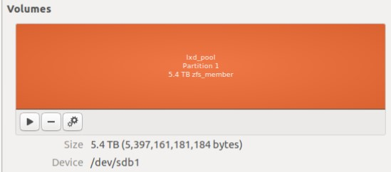
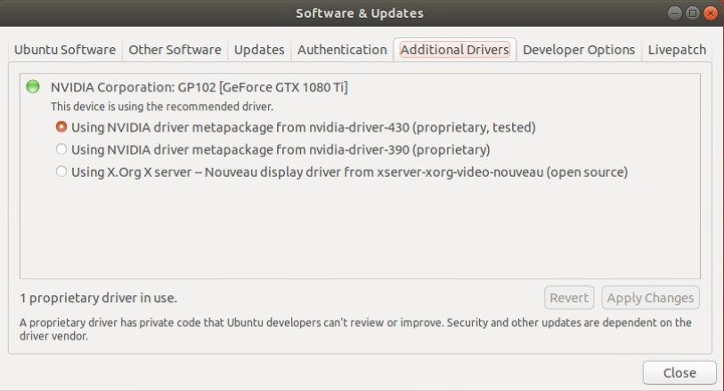
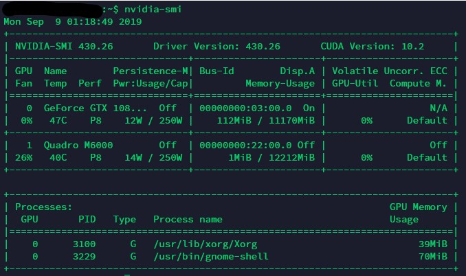
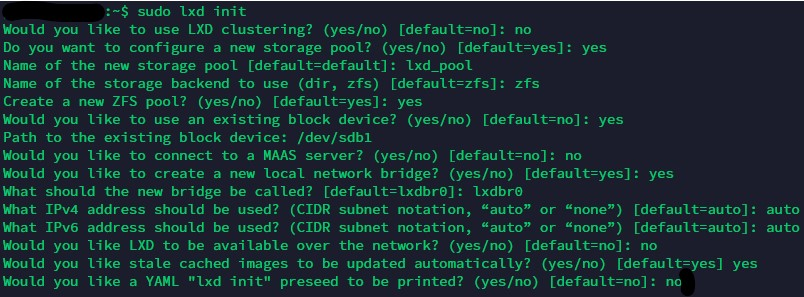
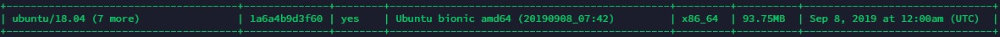
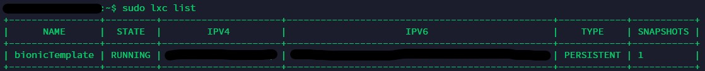
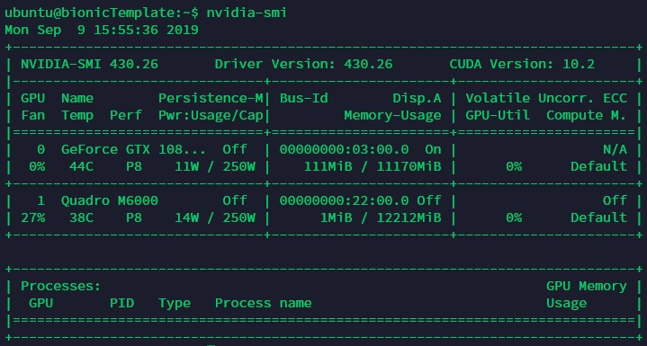
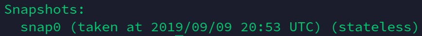

<!DOCTYPE html>
<html>
<head><meta name="generator" content="Hexo 3.9.0">
  <meta charset="utf-8">
  
<!-- Google Analytics -->
<script type="text/javascript">
(function(i,s,o,g,r,a,m){i['GoogleAnalyticsObject']=r;i[r]=i[r]||function(){
(i[r].q=i[r].q||[]).push(arguments)},i[r].l=1*new Date();a=s.createElement(o),
m=s.getElementsByTagName(o)[0];a.async=1;a.src=g;m.parentNode.insertBefore(a,m)
})(window,document,'script','//www.google-analytics.com/analytics.js','ga');

ga('create', 'UA-147598788-1', 'auto');
ga('send', 'pageview');

</script>
<!-- End Google Analytics -->


  
  <title>Creating Shared GPU Server Based On LXD Containers | LIZHI&#39;S BLOG</title>
  <meta name="viewport" content="width=device-width, initial-scale=1, maximum-scale=1">
  <meta name="description" content="Preface Our lab recently purchased a few GPUs and I am tasked with installing them on a workstation. After some research on the web, I decided to go with the LXD container solution, offering nice feat">
<meta name="keywords" content="AI">
<meta property="og:type" content="article">
<meta property="og:title" content="Creating Shared GPU Server Based On LXD Containers">
<meta property="og:url" content="http://lzyang2000.github.io/2019/09/08/Creating-Shared-GPU-Server-Based-On-LXD-Containers/index.html">
<meta property="og:site_name" content="LIZHI&#39;S BLOG">
<meta property="og:description" content="Preface Our lab recently purchased a few GPUs and I am tasked with installing them on a workstation. After some research on the web, I decided to go with the LXD container solution, offering nice feat">
<meta property="og:locale" content="en">
<meta property="og:image" content="http://lzyang2000.github.io/2019/09/08/Creating-Shared-GPU-Server-Based-On-LXD-Containers/partition.jpg">
<meta property="og:image" content="http://lzyang2000.github.io/2019/09/08/Creating-Shared-GPU-Server-Based-On-LXD-Containers/driver-installation.jpg">
<meta property="og:image" content="http://lzyang2000.github.io/2019/09/08/Creating-Shared-GPU-Server-Based-On-LXD-Containers/nvidia-smi.jpg">
<meta property="og:image" content="http://lzyang2000.github.io/2019/09/08/Creating-Shared-GPU-Server-Based-On-LXD-Containers/sudo-lxd-init.jpg">
<meta property="og:image" content="http://lzyang2000.github.io/2019/09/08/Creating-Shared-GPU-Server-Based-On-LXD-Containers/sudo-lxd-images-list.jpg">
<meta property="og:image" content="http://lzyang2000.github.io/2019/09/08/Creating-Shared-GPU-Server-Based-On-LXD-Containers/sudo-lxc-list.jpg">
<meta property="og:image" content="http://lzyang2000.github.io/2019/09/08/Creating-Shared-GPU-Server-Based-On-LXD-Containers/nvidia-smi-c.jpg">
<meta property="og:image" content="http://lzyang2000.github.io/2019/09/08/Creating-Shared-GPU-Server-Based-On-LXD-Containers/frp-architecture.png">
<meta property="og:image" content="http://lzyang2000.github.io/2019/09/08/Creating-Shared-GPU-Server-Based-On-LXD-Containers/snapshot.jpg">
<meta property="og:updated_time" content="2019-09-11T01:12:51.135Z">
<meta name="twitter:card" content="summary">
<meta name="twitter:title" content="Creating Shared GPU Server Based On LXD Containers">
<meta name="twitter:description" content="Preface Our lab recently purchased a few GPUs and I am tasked with installing them on a workstation. After some research on the web, I decided to go with the LXD container solution, offering nice feat">
<meta name="twitter:image" content="http://lzyang2000.github.io/2019/09/08/Creating-Shared-GPU-Server-Based-On-LXD-Containers/partition.jpg">
  
  
    <link rel="icon" href="/favicon.png">
  
  
    <link href="//fonts.googleapis.com/css?family=Source+Code+Pro" rel="stylesheet" type="text/css">
  
  <link rel="stylesheet" href="/css/style.css">
</head>
</html>
<body>
  <div id="container">
    <div id="wrap">
      <header id="header">
  <div id="banner"></div>
  <div id="header-outer" class="outer">
    <div id="header-title" class="inner">
      <h1 id="logo-wrap">
        <a href="/" id="logo">LIZHI&#39;S BLOG</a>
      </h1>
      
        <h2 id="subtitle-wrap">
          <a href="/" id="subtitle">Where Ideas Surface</a>
        </h2>
      
    </div>
    <div id="header-inner" class="inner">
      <nav id="main-nav">
        <a id="main-nav-toggle" class="nav-icon"></a>
        
          <a class="main-nav-link" href="/">Home</a>
        
          <a class="main-nav-link" href="/archives">Archives</a>
        
          <a class="main-nav-link" href="/About-Me">About Me</a>
        
      </nav>
      <nav id="sub-nav">
        
        
        <a href="javascript:;" class="popup-trigger nav-icon" id="nav-search-btn"></a>
      </nav>
      <div id="search-form-wrap">
        <form action="//google.com/search" method="get" accept-charset="UTF-8" class="search-form"><input type="search" name="q" class="search-form-input" placeholder="Search"><button type="submit" class="search-form-submit">&#xF002;</button><input type="hidden" name="sitesearch" value="http://lzyang2000.github.io"></form>
      </div>
    </div>
  </div>
  <div class="local-search-inner"><div class="popup search-popup local-search-popup">
  <div class="local-search-header clearfix">
    <!-- <span class="search-icon">
      <i class="fa fa-search"></i>
    </span> -->
    <span id="icon-search"></span>
    <span class="popup-btn-close">
      <i class="fa fa-times-circle"></i>
    </span>
    <div class="local-search-input-wrapper">
      <input autocomplete="off"
             placeholder="Search" spellcheck="false"
             type="text" id="local-search-input">
    </div>
  </div>
  <div id="local-search-result"></div>
</div>
</div>
</header>
      <div class="outer">
        <section id="main"><article id="post-Creating-Shared-GPU-Server-Based-On-LXD-Containers" class="article article-type-post" itemscope itemprop="blogPost">
  <div class="article-meta">
    <a href="/2019/09/08/Creating-Shared-GPU-Server-Based-On-LXD-Containers/" class="article-date">
  <time datetime="2019-09-09T06:12:59.000Z" itemprop="datePublished">2019-09-08</time>
</a>
    
  <div class="article-category">
    <a class="article-category-link" href="/categories/Machine-Learning/">Machine Learning</a>►<a class="article-category-link" href="/categories/Machine-Learning/DevOps/">DevOps</a>
  </div>

  </div>
  <div class="article-inner">
    
    
      <header class="article-header">
        
  
    <h1 class="article-title" itemprop="name">
      Creating Shared GPU Server Based On LXD Containers
    </h1>
  

      </header>
    
    <div class="article-entry" itemprop="articleBody">
      
        <h2><span id="preface">Preface</span></h2><hr>
<p>Our lab recently purchased a few GPUs and I am tasked with installing them on a workstation. After some research on the web, I decided to go with the LXD container solution, offering nice features such as container isolation, access to GPUs, instant deployment and control over resources.</p>
<a id="more"></a>

<p>Note - all &lt;…&gt; in this article are to be replaced with actual content in installation and configuration unless stated otherwise. For example, &lt;your ip&gt; would be replaced as 198.12.2.1, that is, your ip.</p>
<!-- toc -->

<ul>
<li><a href="#system-and-driver-installation">System and Driver Installation</a><ul>
<li><a href="#linux-installation">Linux Installation</a></li>
<li><a href="#gpu-driver-installation">GPU Driver Installation</a></li>
</ul>
</li>
<li><a href="#lxd-installation-and-configuration">LXD Installation and Configuration</a><ul>
<li><a href="#lxd-installation">LXD Installation</a></li>
<li><a href="#lxd-configuration">LXD Configuration</a></li>
</ul>
</li>
<li><a href="#creating-the-template">Creating the Template</a><ul>
<li><a href="#downloading-the-image-and-creating-a-container">Downloading the Image and Creating a Container</a></li>
<li><a href="#creating-shared-directory-and-sharing-the-gpu">Creating Shared Directory and Sharing the GPU</a><ul>
<li><a href="#shared-directory-configuration">Shared Directory Configuration</a></li>
<li><a href="#shared-gpu-configuration">Shared GPU Configuration</a></li>
</ul>
</li>
</ul>
</li>
<li><a href="#container-ssh-access">Container SSH Access</a><ul>
<li><a href="#configuring-ssh-login">Configuring SSH login</a></li>
<li><a href="#testing-ssh">Testing SSH</a></li>
</ul>
</li>
<li><a href="#container-remote-access-through-frp">Container Remote Access Through frp</a><ul>
<li><a href="#why-this-part">Why this part?</a></li>
<li><a href="#installing-frp">Installing frp</a></li>
<li><a href="#configuring-frp">Configuring frp</a></li>
<li><a href="#configuring-frp-to-auto-start-when-booting-the-host-and-launching-the-container">Configuring frp to auto start when booting the host and launching the container</a></li>
<li><a href="#connection">Connection</a></li>
</ul>
</li>
<li><a href="#creating-deploying-new-containers">Creating &amp; Deploying New Containers</a></li>
<li><a href="#sources">Sources</a></li>
</ul>
<!-- tocstop -->

<h2><span id="system-and-driver-installation">System and Driver Installation</span></h2><hr>
<h3><span id="linux-installation">Linux Installation</span></h3><p>I chose to use Ubuntu 18.04 (Bionic Beaver) as the host system as it defaults to installing LXD 3.0, which supports GPUs in containers. The installation itself is trivial, one thing to note however is that during or after installation, we need to create a ext4 partition that is not mounted to anything, and note down its block name (normally /dev/sdax,/dev/sdbx, etc) as we will need this space to store the containers later. The screenshot below is a 5TB HDD in one partition (this is where containers are stored).<br></p>
<h3><span id="gpu-driver-installation">GPU Driver Installation</span></h3><p>Next comes the installation of the GPU driver - and it seems that the easiest way is to install through the <code>Software &amp; Updates</code> application in Ubuntu. Reboot after finishing installation.<br></p>
<p>After reboot, type <code>nvidia-smi</code> to check the version of the installed driver. Note it down for future use in the containers.<br> </p>
<p>&nbsp;</p>
<h2><span id="lxd-installation-and-configuration">LXD Installation and Configuration</span></h2><hr>
<h3><span id="lxd-installation">LXD Installation</span></h3><p>In terminal, install the required packages,</p>
<figure class="highlight plain"><table><tr><td class="gutter"><pre><span class="line">1</span><br></pre></td><td class="code"><pre><span class="line">sudo apt-get install lxd zfsutils-linux bridge-utils</span><br></pre></td></tr></table></figure>

<ul>
<li>lxd : the container software  </li>
<li>zfsutils-linux : disk management  </li>
<li>bridge-utils : bridge the internet to containers</li>
</ul>
<h3><span id="lxd-configuration">LXD Configuration</span></h3><p>In terminal, initilize LXD,</p>
<figure class="highlight plain"><table><tr><td class="gutter"><pre><span class="line">1</span><br></pre></td><td class="code"><pre><span class="line">sudo lxd init</span><br></pre></td></tr></table></figure>

<p>The configuration follows the screenshot below<br><br>The two things that are not default are :  </p>
<ul>
<li>Would you like to use an existing block device? (yes/no) [default=no]: yes  </li>
<li>Path to the existing block device: /your/partition</li>
</ul>
<p>One thing to note - If your disk/partition is currently formatted and mounted on the system, it will need to be unmounted with <code>sudo umount /path/to/mountpoint</code> before continuing, or LXD will error during configuration. Additionally if there’s an <code>fstab</code> entry this will need to be removed before continuing, otherwise you’ll see mount errors when you next reboot.<sup id="a1"><a href="#beaware">1</a></sup>  </p>
<p>&nbsp;</p>
<h2><span id="creating-the-template">Creating the Template</span></h2><hr>
<h3><span id="downloading-the-image-and-creating-a-container">Downloading the Image and Creating a Container</span></h3><p>In terminal, list the available images,</p>
<figure class="highlight plain"><table><tr><td class="gutter"><pre><span class="line">1</span><br></pre></td><td class="code"><pre><span class="line">sudo lxc image list images:</span><br></pre></td></tr></table></figure>

<p>Find the <code>ubuntu/18.04 (7 more)                | 1a6a4b9d3f60 | yes    | Ubuntu bionic amd64 (20190908_07:42)         | x86_64  | 93.75MB  |</code> entry, the second column <code>1a6a4b9d3f60</code> represents the fingerprint of the image.<br><br>To download the image and launch the container, in terminal run</p>
<figure class="highlight plain"><table><tr><td class="gutter"><pre><span class="line">1</span><br></pre></td><td class="code"><pre><span class="line">sudo lxc launch images:&lt;FINGERPRINT&gt; &lt;ContainerTemplateName&gt;</span><br></pre></td></tr></table></figure>

<p> &lt;FINGERPRINT&gt; is the second column mentioned above and &lt;ContainerTemplateName&gt; is what you want to call the container. In this instance I chose bionicTemplate.  </p>
<ul>
<li>Use <code>sudo lxc list</code> to see the images<br></li>
<li>Use <code>sudo lxc exec &lt;ContainerTemplateName&gt; bash</code> to access the root bash of the container. Switch to standard user <code>ubuntu</code> using <code>su ubuntu</code>  </li>
<li>Note - if the container throws the error <code>sudo: no tty present and no askpass program specified</code>, then edit the file <code>/etc/sudoers</code>, and add <code>ubuntu ALL=(ALL) NOPASSWD:ALL</code> to the end of the file<sup id="a2"><a href="#notty">2</a></sup>.  </li>
</ul>
<h3><span id="creating-shared-directory-and-sharing-the-gpu">Creating Shared Directory and Sharing the GPU</span></h3><h4><span id="shared-directory-configuration">Shared Directory Configuration</span></h4><p>This is for R/W within the container. If only read permission is suffientm just run</p>
<figure class="highlight plain"><table><tr><td class="gutter"><pre><span class="line">1</span><br><span class="line">2</span><br><span class="line">3</span><br></pre></td><td class="code"><pre><span class="line"># Set shared directory，&lt;shareName&gt; is the virtual device name of your wish, &lt;path1&gt; is the shared directory under the host，&lt;path2&gt; is the shared directory under the container that already exsists</span><br><span class="line"></span><br><span class="line">sudo lxc config device add &lt;ContainerTemplateName&gt; &lt;shareName&gt; disk source=&lt;path1&gt; path=&lt;path2&gt;</span><br></pre></td></tr></table></figure>

<p>In terminal, run </p>
<figure class="highlight plain"><table><tr><td class="gutter"><pre><span class="line">1</span><br><span class="line">2</span><br><span class="line">3</span><br><span class="line">4</span><br><span class="line">5</span><br><span class="line">6</span><br><span class="line">7</span><br><span class="line">8</span><br><span class="line">9</span><br><span class="line">10</span><br><span class="line">11</span><br><span class="line">12</span><br><span class="line">13</span><br><span class="line">14</span><br><span class="line">15</span><br><span class="line">16</span><br><span class="line">17</span><br><span class="line">18</span><br><span class="line">19</span><br><span class="line">20</span><br><span class="line">21</span><br><span class="line">22</span><br><span class="line">23</span><br><span class="line">24</span><br><span class="line">25</span><br><span class="line">26</span><br><span class="line">27</span><br><span class="line">28</span><br></pre></td><td class="code"><pre><span class="line"># Allow the LXD demon (running as root) to remap our host&apos;s user ID inside a container - one time step</span><br><span class="line"></span><br><span class="line">echo &quot;root:$UID:1&quot; | sudo tee -a /etc/subuid /etc/subgid</span><br><span class="line"></span><br><span class="line"># Stop the container </span><br><span class="line"></span><br><span class="line">sudo lxc stop &lt;ContainerTemplateName&gt;</span><br><span class="line"></span><br><span class="line"># Remap the UID inside the container - need to do for every container created</span><br><span class="line"></span><br><span class="line">sudo lxc config set &lt;ContainerTemplateName&gt;  raw.idmap &quot;both $UID 1000&quot;</span><br><span class="line"></span><br><span class="line"># Give the container elevated privileges</span><br><span class="line"></span><br><span class="line">sudo lxc config set &lt;ContainerTemplateName&gt; security.privileged true</span><br><span class="line"></span><br><span class="line"># Set shared directory，&lt;shareName&gt; is the virtual device name of your wish, &lt;path1&gt; is the shared directory under the host，&lt;path2&gt; is the shared directory under the container that already exsists</span><br><span class="line"></span><br><span class="line">sudo lxc config device add &lt;ContainerTemplateName&gt; &lt;shareName&gt; disk source=&lt;path1&gt; path=&lt;path2&gt;</span><br><span class="line"></span><br><span class="line"># Start the container </span><br><span class="line"></span><br><span class="line">sudo lxc start &lt;ContainerTemplateName&gt;</span><br><span class="line"></span><br><span class="line"># (Optional)  Access the standard user of the container</span><br><span class="line">sudo lxc exec &lt;ContainerTemplateName&gt; bash</span><br><span class="line"></span><br><span class="line">su ubuntu</span><br></pre></td></tr></table></figure>

<h4><span id="shared-gpu-configuration">Shared GPU Configuration</span></h4><p>In terminal, run one of the two commands below,</p>
<figure class="highlight plain"><table><tr><td class="gutter"><pre><span class="line">1</span><br><span class="line">2</span><br><span class="line">3</span><br><span class="line">4</span><br><span class="line">5</span><br><span class="line">6</span><br><span class="line">7</span><br></pre></td><td class="code"><pre><span class="line"># Give container access to all GPUs</span><br><span class="line"></span><br><span class="line">sudo lxc config device add &lt;ContainerTemplateName&gt; gpu gpu</span><br><span class="line"></span><br><span class="line"># Give container access to selected GPU </span><br><span class="line"></span><br><span class="line">sudo lxc config device add &lt;ContainerTemplateName&gt; gpu0 gpu id=0</span><br></pre></td></tr></table></figure>

<p>Now we look back on the host’s GPU driver version that we noted down before, download it from the website or wget it from the terminal, version 430.26 is linked <a href="http://us.download.nvidia.com/XFree86/Linux-x86_64/430.26/NVIDIA-Linux-x86_64-430.26.run" target="_blank" rel="noopener">here</a> for convenience, you can also run </p>
<figure class="highlight plain"><table><tr><td class="gutter"><pre><span class="line">1</span><br></pre></td><td class="code"><pre><span class="line">wget http://us.download.nvidia.com/XFree86/Linux-x86_64/430.26/NVIDIA-Linux-x86_64-430.26.run</span><br></pre></td></tr></table></figure>

<p>but please adapt your own version depending on your drivers. </p>
<p>Installing the driver inside the container is rather simple, just run</p>
<figure class="highlight plain"><table><tr><td class="gutter"><pre><span class="line">1</span><br><span class="line">2</span><br><span class="line">3</span><br><span class="line">4</span><br><span class="line">5</span><br><span class="line">6</span><br><span class="line">7</span><br><span class="line">8</span><br><span class="line">9</span><br><span class="line">10</span><br><span class="line">11</span><br></pre></td><td class="code"><pre><span class="line"># Access the bash</span><br><span class="line"></span><br><span class="line">sudo lxc exec &lt;ContainerTemplateName&gt; bash</span><br><span class="line"></span><br><span class="line"># Go to the directory where the driver installation file is kept</span><br><span class="line"></span><br><span class="line">cd /driver/installation/file/directory</span><br><span class="line"></span><br><span class="line"># Install the driver without kernel</span><br><span class="line"></span><br><span class="line">sudo sh NVIDIA-Linux-x86_64-xxx.xx.run --no-kernel-module</span><br></pre></td></tr></table></figure>

<p>After installation, use <code>nvidia-smi</code> to check that it is successful. Notice here that the account is ubuntu and the hostname is bionicTemplate.<br></p>
<p>&nbsp;</p>
<h2><span id="container-ssh-access">Container SSH Access</span></h2><hr>
<h3><span id="configuring-ssh-login">Configuring SSH login</span></h3><p>In terminal, install <code>openssh-server</code></p>
<figure class="highlight plain"><table><tr><td class="gutter"><pre><span class="line">1</span><br><span class="line">2</span><br><span class="line">3</span><br><span class="line">4</span><br><span class="line">5</span><br><span class="line">6</span><br><span class="line">7</span><br><span class="line">8</span><br><span class="line">9</span><br><span class="line">10</span><br><span class="line">11</span><br><span class="line">12</span><br></pre></td><td class="code"><pre><span class="line"># install</span><br><span class="line"></span><br><span class="line">sudo apt install openssh-server</span><br><span class="line"></span><br><span class="line"># check service</span><br><span class="line"></span><br><span class="line">sudo systemctl status ssh</span><br><span class="line"></span><br><span class="line"># if it is not Active: active (running), run</span><br><span class="line"></span><br><span class="line">sudo systemctl enable ssh</span><br><span class="line">sudo systemctl start ssh</span><br></pre></td></tr></table></figure>

<p>As our server in in the university network, I did not go over the hassle of<br>configuring firewalls. If you want to, here is an excellent <a href="https://www.digitalocean.com/community/tutorials/how-to-set-up-a-firewall-with-ufw-on-ubuntu-18-04" target="_blank" rel="noopener">tutorial</a> by Digital Ocean.  </p>
<p>Next we configure the ssh keys. In the terminal of the container, run</p>
<figure class="highlight plain"><table><tr><td class="gutter"><pre><span class="line">1</span><br><span class="line">2</span><br><span class="line">3</span><br><span class="line">4</span><br><span class="line">5</span><br><span class="line">6</span><br><span class="line">7</span><br></pre></td><td class="code"><pre><span class="line">cd ~/.ssh</span><br><span class="line"></span><br><span class="line"># Set the password to the key at your will</span><br><span class="line"></span><br><span class="line">ssh-keygen -t rsa</span><br><span class="line">sudo cat id_rsa.pub &gt;&gt; authorized_keys</span><br><span class="line">sudo service ssh restart</span><br></pre></td></tr></table></figure>

<h3><span id="testing-ssh">Testing SSH</span></h3><p>In the container terminal, run <code>ifconfig</code> (if it errors run <code>sudo apt install net-tools</code> first), note down the ip address. Do the same thing for the host, but this time note down the ip adress for lxdbr0.</p>
<p>Next, copy the SSH private key id_rsa to the host through the shared directory that we set up earlier. After copied, put it in a safe place, then in the host terminal, run</p>
<figure class="highlight plain"><table><tr><td class="gutter"><pre><span class="line">1</span><br><span class="line">2</span><br><span class="line">3</span><br><span class="line">4</span><br><span class="line">5</span><br><span class="line">6</span><br><span class="line">7</span><br></pre></td><td class="code"><pre><span class="line"># set permissions to read-only to prevent accidental overwrites, you can also rename it to anything you want</span><br><span class="line"></span><br><span class="line">sudo chmod 400 id_rsa</span><br><span class="line"></span><br><span class="line"># SSH login</span><br><span class="line"></span><br><span class="line">ssh -i id_rsa ubuntu@&lt;the ip of container&gt;</span><br></pre></td></tr></table></figure>

<p>Check that we can log in successfully.</p>
<p>&nbsp;</p>
<h2><span id="container-remote-access-through-frp">Container Remote Access Through frp</span></h2><hr>
<h3><span id="why-this-part">Why this part?</span></h3><p>The reason is though we have successfully configured SSH login, it could only be done on the host machine - which defeats the purpose of this article. Thus we need to configure it such that the connection can “pass through” the host and remote machines can access it. frp is an excellent tool for this purpose. Below is a graph to illustrate the process from their GitHub<sup id="a3"><a href="#frp">3</a></sup>.<br>  </p>
<h3><span id="installing-frp">Installing frp</span></h3><p>Download the latest release from <a href="https://github.com/fatedier/frp/releases" target="_blank" rel="noopener">here</a>, unzip it to <code>/opt/</code>, and the path should be <code>/opt/frp_x.xx.x_linux_amd64/</code>. The files of interest are:</p>
<ul>
<li>frps.ini : server configuration (for host)</li>
<li>frps : server executable</li>
<li>frpc.ini : client configuration (for containers)</li>
<li>frpc : client executable</li>
</ul>
<h3><span id="configuring-frp">Configuring frp</span></h3><p>Edit the frps.ini in the host machine</p>
<figure class="highlight ini"><table><tr><td class="gutter"><pre><span class="line">1</span><br><span class="line">2</span><br><span class="line">3</span><br><span class="line">4</span><br><span class="line">5</span><br></pre></td><td class="code"><pre><span class="line"><span class="section">[common]</span></span><br><span class="line"><span class="comment"># port of your choice</span></span><br><span class="line"><span class="attr">bind_port</span> = <span class="number">7000</span> </span><br><span class="line"><span class="comment"># restric ports for better management</span></span><br><span class="line"><span class="attr">allow_ports</span> = <span class="number">2000</span>-<span class="number">3000</span></span><br></pre></td></tr></table></figure>

<p>Edit the frpc.ini in the container</p>
<figure class="highlight ini"><table><tr><td class="gutter"><pre><span class="line">1</span><br><span class="line">2</span><br><span class="line">3</span><br><span class="line">4</span><br><span class="line">5</span><br><span class="line">6</span><br><span class="line">7</span><br><span class="line">8</span><br><span class="line">9</span><br><span class="line">10</span><br><span class="line">11</span><br><span class="line">12</span><br><span class="line">13</span><br></pre></td><td class="code"><pre><span class="line"><span class="section">[common]</span></span><br><span class="line"><span class="comment"># IP of host on lxdbr0</span></span><br><span class="line"><span class="attr">server_addr</span> = &lt;host IP of lxdbr0&gt; </span><br><span class="line"><span class="comment"># bind_post of host</span></span><br><span class="line"><span class="attr">server_port</span> = &lt;bind_port from frps.ini of host&gt;</span><br><span class="line"></span><br><span class="line"><span class="comment"># an instance, notice the name in [] should be different for different containers</span></span><br><span class="line"><span class="section">[name]</span></span><br><span class="line"><span class="attr">type</span> = tcp</span><br><span class="line"><span class="attr">local_ip</span> = <span class="number">127.0</span>.<span class="number">0.1</span></span><br><span class="line"><span class="attr">local_port</span> = <span class="number">22</span></span><br><span class="line"><span class="comment"># the mapped port on the host</span></span><br><span class="line"><span class="attr">remote_port</span> = &lt;port of your choice&gt;</span><br></pre></td></tr></table></figure>

<h3><span id="configuring-frp-to-auto-start-when-booting-the-host-and-launching-the-container">Configuring frp to auto start when booting the host and launching the container</span></h3><p>Next we configure frp server (the host) such that it starts automatically.</p>
<figure class="highlight plain"><table><tr><td class="gutter"><pre><span class="line">1</span><br></pre></td><td class="code"><pre><span class="line">sudo vim /lib/systemd/system/frps.service</span><br></pre></td></tr></table></figure>

<p>Populate it with </p>
<figure class="highlight plain"><table><tr><td class="gutter"><pre><span class="line">1</span><br><span class="line">2</span><br><span class="line">3</span><br><span class="line">4</span><br><span class="line">5</span><br><span class="line">6</span><br><span class="line">7</span><br><span class="line">8</span><br><span class="line">9</span><br><span class="line">10</span><br><span class="line">11</span><br><span class="line">12</span><br><span class="line">13</span><br></pre></td><td class="code"><pre><span class="line">[Unit]</span><br><span class="line">Description=fraps service</span><br><span class="line">After=network.target network-online.target syslog.target</span><br><span class="line">Wants=network.target network-online.target</span><br><span class="line"></span><br><span class="line">[Service]</span><br><span class="line">Type=simple</span><br><span class="line"></span><br><span class="line">#command to start frp server</span><br><span class="line">ExecStart=/opt/frp_x.xx.x_linux_amd64/frps -c /opt/frp_x.xx.x_linux_amd64/frps.ini</span><br><span class="line"></span><br><span class="line">[Install]</span><br><span class="line">WantedBy=multi-user.target</span><br></pre></td></tr></table></figure>

<p>Then run</p>
<figure class="highlight plain"><table><tr><td class="gutter"><pre><span class="line">1</span><br><span class="line">2</span><br><span class="line">3</span><br><span class="line">4</span><br><span class="line">5</span><br><span class="line">6</span><br><span class="line">7</span><br><span class="line">8</span><br><span class="line">9</span><br></pre></td><td class="code"><pre><span class="line">sudo systemctl enable frps</span><br><span class="line">sudo systemctl start frps</span><br><span class="line">``` </span><br><span class="line"></span><br><span class="line">It is nearly the same with the frp client (the container).</span><br><span class="line">```terminal</span><br><span class="line"># this is in the container</span><br><span class="line"></span><br><span class="line">sudo vim /lib/systemd/system/frpc.service</span><br></pre></td></tr></table></figure>

<p>Populate it with </p>
<figure class="highlight plain"><table><tr><td class="gutter"><pre><span class="line">1</span><br><span class="line">2</span><br><span class="line">3</span><br><span class="line">4</span><br><span class="line">5</span><br><span class="line">6</span><br><span class="line">7</span><br><span class="line">8</span><br><span class="line">9</span><br><span class="line">10</span><br><span class="line">11</span><br><span class="line">12</span><br><span class="line">13</span><br></pre></td><td class="code"><pre><span class="line">[Unit]</span><br><span class="line">Description=fraps service</span><br><span class="line">After=network.target network-online.target syslog.target</span><br><span class="line">Wants=network.target network-online.target</span><br><span class="line"></span><br><span class="line">[Service]</span><br><span class="line">Type=simple</span><br><span class="line"></span><br><span class="line">#command to start frp client</span><br><span class="line">ExecStart=/opt/frp_x.xx.x_linux_amd64/frpc -c /opt/frp_x.xx.x_linux_amd64/frpc.ini</span><br><span class="line"></span><br><span class="line">[Install]</span><br><span class="line">WantedBy=multi-user.target</span><br></pre></td></tr></table></figure>

<p>Then run</p>
<figure class="highlight plain"><table><tr><td class="gutter"><pre><span class="line">1</span><br><span class="line">2</span><br></pre></td><td class="code"><pre><span class="line">sudo systemctl enable frpc</span><br><span class="line">sudo systemctl start frpc</span><br></pre></td></tr></table></figure>

<h3><span id="connection">Connection</span></h3><figure class="highlight plain"><table><tr><td class="gutter"><pre><span class="line">1</span><br></pre></td><td class="code"><pre><span class="line">ssh -i &lt;private key&gt;  -p &lt;remote_port of container frpc&gt; &lt;username, typically ubuntu&gt;@&lt;ip of host&gt;</span><br></pre></td></tr></table></figure>

<p>&nbsp;</p>
<h2><span id="creating-amp-deploying-new-containers">Creating &amp; Deploying New Containers</span></h2><hr>
<p>After creating the template, we can now simply copy it and deploy it.</p>
<figure class="highlight plain"><table><tr><td class="gutter"><pre><span class="line">1</span><br><span class="line">2</span><br><span class="line">3</span><br><span class="line">4</span><br><span class="line">5</span><br><span class="line">6</span><br><span class="line">7</span><br><span class="line">8</span><br><span class="line">9</span><br><span class="line">10</span><br><span class="line">11</span><br><span class="line">12</span><br><span class="line">13</span><br><span class="line">14</span><br><span class="line">15</span><br><span class="line">16</span><br><span class="line">17</span><br><span class="line">18</span><br><span class="line">19</span><br><span class="line">20</span><br><span class="line">21</span><br><span class="line">22</span><br><span class="line">23</span><br><span class="line">24</span><br><span class="line">25</span><br><span class="line">26</span><br><span class="line">27</span><br><span class="line">28</span><br><span class="line">29</span><br></pre></td><td class="code"><pre><span class="line"># create new container</span><br><span class="line"></span><br><span class="line">sudo lxc copy &lt;ContainerTemplateName&gt; &lt;newContainerName&gt;</span><br><span class="line">sudo lxc start &lt;newContainerName&gt;</span><br><span class="line">sudo lxc exec &lt;newContainerName&gt; bash</span><br><span class="line">su ubuntu</span><br><span class="line"></span><br><span class="line"># configure new SSH</span><br><span class="line"></span><br><span class="line">cd ~/.ssh/</span><br><span class="line">ssh-keygen -t rsa</span><br><span class="line">cat id_rsa.pub &gt;&gt; authorized_keys</span><br><span class="line">sudo service ssh restart</span><br><span class="line">sudo cp id_rsa /your/shared/directory/</span><br><span class="line"></span><br><span class="line"># change hostname</span><br><span class="line"></span><br><span class="line">sudo vim /etc/hostname</span><br><span class="line"></span><br><span class="line"># change the old hostname (the one after 127.0.0.1) to the new one, see screenshot below</span><br><span class="line"></span><br><span class="line">sudo vim /etc/hosts</span><br><span class="line"></span><br><span class="line"># change the [name] and remote_port of frpc.ini to a different one</span><br><span class="line">sudo vim /opt/frp_x.xx.x_linux_amd64/frpc.ini</span><br><span class="line"></span><br><span class="line"># reboot to take effect</span><br><span class="line"></span><br><span class="line">sudo reboot</span><br></pre></td></tr></table></figure>

<p>Take a snapshot,</p>
<figure class="highlight plain"><table><tr><td class="gutter"><pre><span class="line">1</span><br></pre></td><td class="code"><pre><span class="line">sudo lxc snapshot &lt;ContainerName&gt;</span><br></pre></td></tr></table></figure>

<p>To check the name of the snapshot,</p>
<figure class="highlight plain"><table><tr><td class="gutter"><pre><span class="line">1</span><br></pre></td><td class="code"><pre><span class="line">sudo lxc info &lt;ContainerName&gt;</span><br></pre></td></tr></table></figure>

<p></p>
<p>To restore,</p>
<figure class="highlight plain"><table><tr><td class="gutter"><pre><span class="line">1</span><br></pre></td><td class="code"><pre><span class="line">sudo lxc restore &lt;ContainerName&gt; &lt;snapshot-name&gt;</span><br></pre></td></tr></table></figure>

<p>&nbsp;</p>
<h2><span id="sources">Sources</span></h2><hr>
<p>These sources helped me immensely in this project. Many thanks to these kind people, especially Shen<sup id="a4"><a href="#gpu-server-lab">4</a></sup> and Ewen<sup id="a5"><a href="#frp-service">5</a></sup></p>
<p><a name="beaware">1</a> : <a href="https://bayton.org/docs/linux/lxd/lxd-zfs-and-bridged-networking-on-ubuntu-16-04-lts/#be-aware" target="_blank" rel="noopener">Be Aware</a> <a href="#a1">↩</a><br><a name="notty">2</a> : <a href="https://askubuntu.com/questions/1113503/ubuntu-18-04-sudo-no-tty-present-and-no-askpass-program-specified" target="_blank" rel="noopener">Sudo Issue</a> <a href="#a2">↩</a><br><a name="frp">3</a> : <a href="https://github.com/fatedier/frp" target="_blank" rel="noopener">frp</a> <a href="#a3">↩</a><br><a name="gpu-server-lab">4</a> : <a href="https://shenxiaohai.me/2018/12/03/gpu-server-lab/" target="_blank" rel="noopener">gpu-server-lab</a> <a href="#a4">↩</a><br><a name="frp-service">5</a> : <a href="https://blog.csdn.net/sinat_29963957/article/details/83591264" target="_blank" rel="noopener">frp-service</a> <a href="#a5">↩</a>  </p>
<p>Link to this article: <a href="http://lzyang2000.github.io/2019/09/08/Creating-Shared-GPU-Server-Based-On-LXD-Containers/">http://lzyang2000.github.io/2019/09/08/Creating-Shared-GPU-Server-Based-On-LXD-Containers/</a> . All rights reserved.</p>

      
    </div>
    <footer class="article-footer">
      <a data-url="http://lzyang2000.github.io/2019/09/08/Creating-Shared-GPU-Server-Based-On-LXD-Containers/" data-id="ck0ele5t40001ekxlm6y5590y" class="article-share-link">Share</a>
      
      
  <ul class="article-tag-list"><li class="article-tag-list-item"><a class="article-tag-list-link" href="/tags/AI/">AI</a></li></ul>

    </footer>
  </div>
  
    
  
</article>

</section>
        
          <aside id="sidebar">
  
    
  <div class="widget-wrap">
    <h3 class="widget-title">Categories</h3>
    <div class="widget">
      <ul class="category-list"><li class="category-list-item"><a class="category-list-link" href="/categories/Machine-Learning/">Machine Learning</a><ul class="category-list-child"><li class="category-list-item"><a class="category-list-link" href="/categories/Machine-Learning/DevOps/">DevOps</a></li></ul></li></ul>
    </div>
  </div>


  
    
  <div class="widget-wrap">
    <h3 class="widget-title">Tags</h3>
    <div class="widget">
      <ul class="tag-list"><li class="tag-list-item"><a class="tag-list-link" href="/tags/AI/">AI</a></li></ul>
    </div>
  </div>


  
    
  <div class="widget-wrap">
    <h3 class="widget-title">Tag Cloud</h3>
    <div class="widget tagcloud">
      <a href="/tags/AI/" style="font-size: 10px;">AI</a>
    </div>
  </div>

  
    
  <div class="widget-wrap">
    <h3 class="widget-title">Archives</h3>
    <div class="widget">
      <ul class="archive-list"><li class="archive-list-item"><a class="archive-list-link" href="/archives/2019/09/">September 2019</a></li></ul>
    </div>
  </div>


  
    
  <div class="widget-wrap">
    <h3 class="widget-title">Recent Posts</h3>
    <div class="widget">
      <ul>
        
          <li>
            <a href="/2019/09/08/Creating-Shared-GPU-Server-Based-On-LXD-Containers/">Creating Shared GPU Server Based On LXD Containers</a>
          </li>
        
      </ul>
    </div>
  </div>

  
</aside>
        
      </div>
      <footer id="footer">
  
  <div class="outer">
    <div id="footer-info" class="inner">
      &copy; 2019 Lizhi Yang<br>
      Powered by <a href="http://hexo.io/" target="_blank">Hexo</a>
    </div>
  </div>
</footer>
    </div>
    <nav id="mobile-nav">
  
    <a href="/" class="mobile-nav-link">Home</a>
  
    <a href="/archives" class="mobile-nav-link">Archives</a>
  
    <a href="/About-Me" class="mobile-nav-link">About Me</a>
  
</nav>
    

<script src="//ajax.googleapis.com/ajax/libs/jquery/2.0.3/jquery.min.js"></script>


  <link rel="stylesheet" href="/fancybox/jquery.fancybox.css">
  <script src="/fancybox/jquery.fancybox.pack.js"></script>


<script src="/js/script.js"></script>


  </div>
  
  <script type="text/javascript">
    // Popup Window;
    var isfetched = false;
    var isXml = true;
    // Search DB path;
    var search_path = "search.xml";
    if (search_path.length === 0) {
      search_path = "search.xml";
    } else if (/json$/i.test(search_path)) {
      isXml = false;
    }
    var path = "/" + search_path;
    // monitor main search box;

    var onPopupClose = function (e) {
      $('.popup').hide();
      $('#local-search-input').val('');
      $('.search-result-list').remove();
      $('#no-result').remove();
      $(".local-search-pop-overlay").remove();
      $('body').css('overflow', '');
    }

    function proceedsearch() {
      $("body")
        .append('<div class="search-popup-overlay local-search-pop-overlay"></div>')
        .css('overflow', 'hidden');
      $('.search-popup-overlay').click(onPopupClose);
      $('.popup').toggle();
      var $localSearchInput = $('#local-search-input');
      $localSearchInput.attr("autocapitalize", "none");
      $localSearchInput.attr("autocorrect", "off");
      $localSearchInput.focus();
    }

    // search function;
    var searchFunc = function(path, search_id, content_id) {
      'use strict';

      // start loading animation
      $("body")
        .append('<div class="search-popup-overlay local-search-pop-overlay">' +
          '<span id="icon-spinner"></span>' +
          '</div>')
        .css('overflow', 'hidden');
      $("#search-loading-icon").css('margin', '20% auto 0 auto').css('text-align', 'center');

      $.ajax({
        url: path,
        dataType: isXml ? "xml" : "json",
        async: true,
        success: function(res) {
          // get the contents from search data
          isfetched = true;
          $('.popup').detach().appendTo('.local-search-inner');
          var datas = isXml ? $("entry", res).map(function() {
            return {
              title: $("title", this).text(),
              content: $("content",this).text(),
              url: $("url" , this).text()
            };
          }).get() : res;
          var input = document.getElementById(search_id);
          var resultContent = document.getElementById(content_id);
          var inputEventFunction = function() {
            var searchText = input.value.trim().toLowerCase();
            var keywords = searchText.split(/[\s\-]+/);
            if (keywords.length > 1) {
              keywords.push(searchText);
            }
            var resultItems = [];
            if (searchText.length > 0) {
              // perform local searching
              datas.forEach(function(data) {
                var isMatch = false;
                var hitCount = 0;
                var searchTextCount = 0;
                var title = data.title.trim();
                var titleInLowerCase = title.toLowerCase();
                var content = data.content.trim().replace(/<[^>]+>/g,"");
                var contentInLowerCase = content.toLowerCase();
                var articleUrl = decodeURIComponent(data.url);
                var indexOfTitle = [];
                var indexOfContent = [];
                // only match articles with not empty titles
                if(title != '') {
                  keywords.forEach(function(keyword) {
                    function getIndexByWord(word, text, caseSensitive) {
                      var wordLen = word.length;
                      if (wordLen === 0) {
                        return [];
                      }
                      var startPosition = 0, position = [], index = [];
                      if (!caseSensitive) {
                        text = text.toLowerCase();
                        word = word.toLowerCase();
                      }
                      while ((position = text.indexOf(word, startPosition)) > -1) {
                        index.push({position: position, word: word});
                        startPosition = position + wordLen;
                      }
                      return index;
                    }

                    indexOfTitle = indexOfTitle.concat(getIndexByWord(keyword, titleInLowerCase, false));
                    indexOfContent = indexOfContent.concat(getIndexByWord(keyword, contentInLowerCase, false));
                  });
                  if (indexOfTitle.length > 0 || indexOfContent.length > 0) {
                    isMatch = true;
                    hitCount = indexOfTitle.length + indexOfContent.length;
                  }
                }

                // show search results

                if (isMatch) {
                  // sort index by position of keyword

                  [indexOfTitle, indexOfContent].forEach(function (index) {
                    index.sort(function (itemLeft, itemRight) {
                      if (itemRight.position !== itemLeft.position) {
                        return itemRight.position - itemLeft.position;
                      } else {
                        return itemLeft.word.length - itemRight.word.length;
                      }
                    });
                  });

                  // merge hits into slices

                  function mergeIntoSlice(text, start, end, index) {
                    var item = index[index.length - 1];
                    var position = item.position;
                    var word = item.word;
                    var hits = [];
                    var searchTextCountInSlice = 0;
                    while (position + word.length <= end && index.length != 0) {
                      if (word === searchText) {
                        searchTextCountInSlice++;
                      }
                      hits.push({position: position, length: word.length});
                      var wordEnd = position + word.length;

                      // move to next position of hit

                      index.pop();
                      while (index.length != 0) {
                        item = index[index.length - 1];
                        position = item.position;
                        word = item.word;
                        if (wordEnd > position) {
                          index.pop();
                        } else {
                          break;
                        }
                      }
                    }
                    searchTextCount += searchTextCountInSlice;
                    return {
                      hits: hits,
                      start: start,
                      end: end,
                      searchTextCount: searchTextCountInSlice
                    };
                  }

                  var slicesOfTitle = [];
                  if (indexOfTitle.length != 0) {
                    slicesOfTitle.push(mergeIntoSlice(title, 0, title.length, indexOfTitle));
                  }

                  var slicesOfContent = [];
                  while (indexOfContent.length != 0) {
                    var item = indexOfContent[indexOfContent.length - 1];
                    var position = item.position;
                    var word = item.word;
                    // cut out 100 characters
                    var start = position - 20;
                    var end = position + 80;
                    if(start < 0){
                      start = 0;
                    }
                    if (end < position + word.length) {
                      end = position + word.length;
                    }
                    if(end > content.length){
                      end = content.length;
                    }
                    slicesOfContent.push(mergeIntoSlice(content, start, end, indexOfContent));
                  }

                  // sort slices in content by search text's count and hits' count

                  slicesOfContent.sort(function (sliceLeft, sliceRight) {
                    if (sliceLeft.searchTextCount !== sliceRight.searchTextCount) {
                      return sliceRight.searchTextCount - sliceLeft.searchTextCount;
                    } else if (sliceLeft.hits.length !== sliceRight.hits.length) {
                      return sliceRight.hits.length - sliceLeft.hits.length;
                    } else {
                      return sliceLeft.start - sliceRight.start;
                    }
                  });

                  // select top N slices in content

                  var upperBound = parseInt("1");
                  if (upperBound >= 0) {
                    slicesOfContent = slicesOfContent.slice(0, upperBound);
                  }

                  // highlight title and content

                  function highlightKeyword(text, slice) {
                    var result = '';
                    var prevEnd = slice.start;
                    slice.hits.forEach(function (hit) {
                      result += text.substring(prevEnd, hit.position);
                      var end = hit.position + hit.length;
                      result += '<b class="search-keyword">' + text.substring(hit.position, end) + '</b>';
                      prevEnd = end;
                    });
                    result += text.substring(prevEnd, slice.end);
                    return result;
                  }

                  var resultItem = '';

                  if (slicesOfTitle.length != 0) {
                    resultItem += "<li><a href='" + articleUrl + "' class='search-result-title'>" + highlightKeyword(title, slicesOfTitle[0]) + "</a>";
                  } else {
                    resultItem += "<li><a href='" + articleUrl + "' class='search-result-title'>" + title + "</a>";
                  }

                  slicesOfContent.forEach(function (slice) {
                    resultItem += "<a href='" + articleUrl + "'>" +
                      "<p class=\"search-result\">" + highlightKeyword(content, slice) +
                      "...</p>" + "</a>";
                  });

                  resultItem += "</li>";
                  resultItems.push({
                    item: resultItem,
                    searchTextCount: searchTextCount,
                    hitCount: hitCount,
                    id: resultItems.length
                  });
                }
              })
            };
            if (keywords.length === 1 && keywords[0] === "") {
              resultContent.innerHTML = '<span id="icon-noresult"></span>'
            } else if (resultItems.length === 0) {
              resultContent.innerHTML = '<span id="icon-noresult"></span>'
            } else {
              resultItems.sort(function (resultLeft, resultRight) {
                if (resultLeft.searchTextCount !== resultRight.searchTextCount) {
                  return resultRight.searchTextCount - resultLeft.searchTextCount;
                } else if (resultLeft.hitCount !== resultRight.hitCount) {
                  return resultRight.hitCount - resultLeft.hitCount;
                } else {
                  return resultRight.id - resultLeft.id;
                }
              });
              var searchResultList = '<ul class=\"search-result-list\">';
              resultItems.forEach(function (result) {
                searchResultList += result.item;
              })
              searchResultList += "</ul>";
              resultContent.innerHTML = searchResultList;
            }
          }

          if ('auto' === "auto") {
            input.addEventListener('input', inputEventFunction);
          } else {
            $('.search-icon').click(inputEventFunction);
            input.addEventListener('keypress', function (event) {
              if (event.keyCode === 13) {
                inputEventFunction();
              }
            });
          }

          // remove loading animation
          $(".local-search-pop-overlay").remove();
          $('body').css('overflow', '');

          proceedsearch();
        }
      });
    }

    // handle and trigger popup window;
    $('.popup-trigger').click(function(e) {
      e.stopPropagation();
      if (isfetched === false) {
        searchFunc(path, 'local-search-input', 'local-search-result');
      } else {
        proceedsearch();
      };
    });

    $('.popup-btn-close').click(onPopupClose);
    $('.popup').click(function(e){
      e.stopPropagation();
    });
    $(document).on('keyup', function (event) {
      var shouldDismissSearchPopup = event.which === 27 &&
        $('.search-popup').is(':visible');
      if (shouldDismissSearchPopup) {
        onPopupClose();
      }
    });
  </script>


</body>
</html>